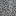
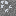
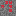

CommunÉtain

Explore les profondeurs, découvre quatre nouveaux minerais et transforme tes trouvailles en ressources précieuses.



Chaque minerai apparaît naturellement dans l’Overworld, en pierre ou en deepslate selon la profondeur.
Récupère l’étain brut, puis fonds-le pour obtenir des lingots.
À fondreUn métal précieux à extraire puis à fondre en lingots.
À fondreUne gemme rouge éclatante, directement extraite de son minerai.
Gemme rareUne pierre bleue à découvrir au cœur des couches profondes.
Gemme rareLes minerais s’intègrent aux mécaniques de Minecraft : pioche adaptée, butin, enchantements et fusion.
Parcours les grottes de l’Overworld et repère les filons, en surface ou dans les profondeurs.
Choisis une pioche assez solide. Silk Touch et Fortune fonctionnent sur les minerais.
Fonds l’étain et l’argent, puis compacte tes ressources en blocs de stockage.
Mod de minerais pour Minecraft Java, conçu pour NeoForge.